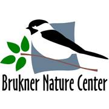
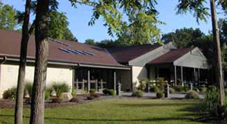
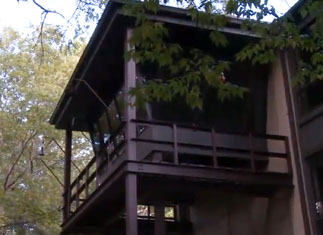

Brukner Nature Center Fun!
Wild Art
Wild Art! Fun painting events for children & adults. Join us for a unique FUNdraising event as we help you paint a portrait of wildlife at Brukner Nature Center. A BNC naturalist will provide an engaging introduction to the natural history of these woodland creatures, then Lisa Bauer of the Mayflower Arts Center will guide you as you paint on canvas. Upcoming dates: Sunday, November 1 1:00-4:00pm (will be held at BNC!) Wild Art! "Elements of Autumn" ages: 13 - adult Cost: $35/person (cash or check) 16"x20" canvas Deadline for payment: Friday, October 30 by 5:00pm - cash or check Pre-register by calling 937-698-6493.
PEEP: Preschool Environmental Education Program
Open registration for Winter 1 session begins November 23 Give the child in your life the gift to play, learn and grow with nature! Let them experience the outdoors using their imagination, free to climb trees and crawl over logs! We are planning our PEEP Winter Session 1 as an in-person class with a few changes! Class sizes will be limited to 10 children and the classes will be 1.5 hours of mostly outdoor activity (always dress for the weather - winter coat, boots, gloves, etc). Please note that PEEP is geared specifically for children ages 3 – 5 years old, who are potty-trained and not currently in Kindergarten or being homeschooled. We will be following the state guidelines for covid-19. Sessions offered: Monday, Tuesday, Wednesday, Thursday, and Friday mornings from 9:30 – 11:00am, or Thursday afternoons from 1:00 – 2:30pm. Winter 1 session will run from Jan. 4 - Feb.12. Cost for PEEP Winter 1 Session: $55 for BNC Members per child $75 for nonmembers per child (CASH OR CHECK ONLY)
Birthday Parties
A fun, yet educational celebration! Come celebrate your preschool or school-aged child’s birthday with their friends and our Wildlife Ambassadors! An awe-inspiring BNC Naturalist will provide a half-hour, hands-on, live wildlife program to make your child's party unforgettable!! A large classroom is available for you to decorate, have cake and ice cream and play games with up to 15 of your child’s friends! Party favors can be purchased in the Nature Shop and the trails and displays are available for your use. To schedule a party, call 937-698-6493 or click on the link below for complete party details!
Party Flyer Facility BrochureMonarch Celebration
6th annual Monarch Celebration Covid-19 style! Our celebration will take place the entire month of September to allow for social distancing! Through the sponsorship of the Troy Noon Optimists, we are able to continue celebrating Monarchs - a big shout out goes to all of them!
Family friendly activities include: 1. Hike the Sugar Bush Trail around Cattail Pond and enjoy the self-guided Monarch trail, developed specially for the Monarch Celebration! 2. Follow our Facebook posts on Monarchs for cool facts and interesting info! 3. Fill out the Monarch Quiz Sheet - found at bottom. Monarch Quiz Sheet
Interpretive Building
Art Exhibits & Kid's Nature Art Exhibit. Each season brings a new wildlife art exhibit to Brukner Nature Center's Heidelberg Auditorium and Meeting Room! Come enjoy our current art exhibit and mark you calendars for the opening of our new exhibit! Nature Library All visitors can enjoy the field guides, nature writings, DVDs and more! A special section of the Nature Library is devoted to kids' nature picture books, so stop by and gather your family for your own nature story time! Nature Gift Shop Check out our unique items in our nature shop at your next visit! We have field guides, children books, t-shirts, waterbottles, turtle necklaces, owl pellets, bird calls, a variety of bird houses, our own "Brukner Blend" coffee, and so much more!
Take a Hike!
Brukner Nature Center has 6 miles of nature trails that allow you to search for wildlife on quiet mulch trails through wooldland, wetland, and prairie. Trails are open from sunrise to sunset only! No pets allowed - they scare our wildlife! No smoking or vaping on BNC property! Please stay on the trails, especially through the muddy parts! Off-trail exploration causes erosion, damages wildflowers, & depletes habitat by widening trails. Please take all trash home with you!
Trail Map GuideBird Watching
Tree-Top Bird Vista Brukner Nature Center is a premier birding spot for spring bird migration, winter feeder watching (Project FeederWatch) and enjoying birds at any time of the year! The Tree-Top Bird Vista is an air-conditioned oasis during summer months and a warm and inviting place to spend the winter hours! The pileated woodpecker visits our feeders on a regular basis year round! Check out our calendar of events for upcoming birding programs! Meet members of the Brukner Bird Club on the 3rd Sunday of every month from 2:00-4:00pm in our Tree-Top Bird Vista.
River’s Edge Wildlife Preserve

Open from sunrise to sunset and is located just a few miles southwest of us. Directions from BNC to River's Edge Wildlife Preserve: Turn left out of Brukner Nature Center then take the first right onto Greenlee Rd., which will dead end into St. Rt. 55. Turn right and follow S.Rt. 55 over the Stillwater River. Turn left on Calumet Rd. immediately after crossing the bridge. The parking area will be on your left. The gravel lot provides space for 10 cars and access to a paver walkway leading to an information panel and our first and only trailhead, the Cascades Loop. Enjoy this hike as it follows the crest of the ravine, providing excellent opportunities for birdwatching in the treetops below! It then passes a small limestone cascade that flows only in the wetter months, but is a unique ecosystem supporting rare flora and fauna. The trail follows an old access road down into the forested valley then back up a gently sloping rise back to the parking lot.
Winter Vacation Camps
“Winter Wildlife Myths” Kids in grades K-5th 9:30am - 11:30am When the air turns frigid and the frost settles on the windows, children fi ll with anticipation of winter vacation. Sign your child up for a morning of exploration and fill their new found free time with fun and learning. During this winter vacation we will investigate the truth behind some popular wildlife myths! Do all birds migrate for winter? Do squirrels really hibernate? Come meet our wildlife ambassadors and learn what’s fact and what’s fiction! Register for one or both days: Monday’s topic is mammals Tuesday's topic is birds PRICE PER DAY OF CAMP: $15 for BNC Members • $20 for non-members (may register for 1 or 2 days; cash or check) Deadline: Wednesday, December 16 by 5:00pm Winter Vacation Camps
Price per day camp: $15.00 for BNC members and $20.00 for non-members
Click here to download a Medical Consent Form5K Run Wild for Wildlife!
Details for 2020: If you enjoy running or hiking the woodland trails, you’ll love BNC’s VIRTUAL 5K Run Wild for Wildlife! For details about this event this year, click on the registration form link on the right. The deadline for registrations for participants wanting a super cool T-shirt is Wednesday, April 8 Registrations with no T-shirts must be postmarked by Thursday, April 16 or dropped off by Tuesday, April 21 at 7pm. You can run/hike anytime you want - like in the whole next year!! - but arrows for the course will be set up Saturday, April 25 – Sunday, May 10. Please don't all come at once - we must social distance, people! :) If the parking lot is packed, come back another time! Start training now!
Registration FormWish List
Wildlife Rehab: Disposable non-latex exam gloves (size M/L), bath towels (please, no holes or frayed edges), Cheerios (plain), cottonballs, Timothy hay, fresh fruit & vegetables, moist & dry cat food, dry dog food, poultry grower & finisher (16% protein), saline solution, He laundry detergent pods, dishwasher detergent pods, bleach, 30 gallon force flex trash bags, toilet paper, paper towels, live mealworms, live waxworms, hard-shelled nuts (acorns, walnuts, etc), black oil sunflower seed, mixed seed, gift cards to Meijer, Lowes, PetCo, and Tractor Supply. Nature Education: Gift cards for Kroger, Jay & Mary's Book Store, and Amazon, jumbo clear hand soap refill, jumbo hand sanitizer refill, sanitizer wipes, spring clothes pins, 30 gallon black trash bags, watercolor paint sets, tissues, washable markers, construction paper (yellow, blue, black, brown).
Young Birders Club
Come be a part of one of the most exciting and rewarding clubs, geared specifically for young birders in grades 6 through 12! As a member of Brukner Nature Center’s Young Birders Club you’ll enjoy the opportunity to: Discover and study the amazing birds found at Brukner Nature Center through hands-on monthly meetings and hikes! Get experience using BNC’s high quality binoculars and field guides during our meetings, hikes and special events, so no extra equipment is needed! Join in field trips and other special events with BNC staff and the BNC Bird Club adults! Network with other young naturalists and professional ornithologists during opportunities for young birders around the state! Apply for scholarships to attend summer camps, workshops, classes, training programs, conventions and other bird-related activities!
Membership is only $10.00 per year and due at the 3rd meeting you attend. For more information email: brian@brukneraturecenter.com
YBC Member FormAn integral part of Brukner Nature Center’s interpretive programming, the 1804 Iddings Log House also holds an important place in the history of Miami County. The Iddings family is originally descended from the Norsemen and came to America from Radnorshire, Wales in 1683. Richard Iddings and his wife, Sarah Thomas, arrived in Philadelphia, Pennsylvania and settled in Nantmeal Township, Pennsylvania, between the forks of the Brandywine River and French Creek, very near a little place called Valley Forge. Richard and Sarah Iddings were the grandparents of two famous figures in Ohio history, General “Mad” Anthony Wayne and Benjamin Iddings. Benjamin Iddings married Phebe Wilkinson in 1775, in Pennsylvania. Their children, listed in the Quaker Monthly Meeting records were Rachel, Ruth, Talbot, Joseph, Mary, Benjamin Jr., Phoebe, William, Millie and Hannah. The Iddings were a prominent and very active family in the Quaker community. They began their life on the road in 1779, moving frequently to escape the fighting in the area. They settled in Greene County, Tennessee in 1795. Here they helped found the New Hope Monthly Meeting, were Benjamin was appointed recorder in 1796 and was an Elder. Following the Treaty of Greeneville in 1795, the Ohio territory was opened for settlement. Benjamin, perhaps because of his famous cousin’s experience in the area, made an exploratory trip up the Stillwater River into what is now Newton Township. He moved his family to Miami County, acquiring a patent on 160 acres on SE 1/4 Sec. 33-7-5E. Here, in 1804, Benjamin constructed the log house on what is now Brukner Nature Center property. Benjamin and Phoebe lived here with six of their ten children, as Rachel had passed away and Ruth, Talbot & Joseph were married and on their own. A History of the 1804 Iddings Log House Iddings Log House Interestingly, Benjamin built his house on the property of his neighbor, Benjamin Pearson and later paid him the sum of $63.11 ½ for an additional four acres upon which his house was built. Although this sounds strange for modern times, it was not unusual for property lines to be mistaken in the wilderness of 1800 Ohio. Phoebe died in 1818 and in 1822, Benjamin married his widowed neighbor, Ruth Pierce. Benjamin died in 1826, and both he and Ruth are buried in Old Union Cemetery, on Horseshoe Bend Road. Through extensive research, the underlying historical value of the structure itself was realized, not only for its handsome construction but for the significant family history. In 1976, the 1804 Iddings Log House was placed on the National Register of Historic Places and a successful restoration was completed in 1981. Through its doors have passed many visitors stepping back in time, from Iddings relatives looking for a link to the past to children too numerous to count making memories to last a lifetime.
Lets get in touch. Send us a message:
5995 Horsehoe Bend rd. Troy, OH
Phone: 937 698 6493
Email: info@bruknernaturecenter.com